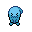

Pokédex / #202

Wobbuffet #202
Psychic
To keep its pitchblack tail hidden, it lives quietly in the darkness. It is never first to attack.
Generation 2 · Johto
Stats
| Attack | 33 | |
|---|---|---|
| Defense | 58 | |
| Sp. Atk | 33 | |
| Sp. Def | 58 |
In the wild
| Wild level | 40–50 |
|---|---|
| HP | 190 |
| Experience | 12 |
| Egg groups | Amorphous |
Evolution
- Evolves from Wynaut at level 25.
Moves
| Level | Move | Type | Category | Power | Energy | Cooldown | Effect | |
|---|---|---|---|---|---|---|---|---|
| 1 | Tackle | Normal | Physical | 15 | 15 | 1s | Tackle is one of the most common and basic moves a Pokemon learns. It deals damage with no additional effects. | |
| 5 | Splash | Normal | Status | 20 | 20 | 5s | Splash deals damage and has no secondary effect. | |
| 5 | Encore | Normal | Status | – | 100 | 60s | The user compels the target to keep using the move it encored for three turns. | |
| 5 | Mirror Coat | Psychic | Special | – | 100 | 90s | Any move is reflected back to the attacker. | |
| 5 | Counter | – | Physical | – | 100 | 90s | When hit by a Physical Attack, user strikes back with 2x power. | |
| 5 | Charm | Fairy | Status | – | 50 | 60s | Charm lowers the Attack stat of the target by two stages. | |
| 5 | Destiny Bond | Ghost | Status | – | 120 | 60s | After using this move, if the user faints, the Pokemon that landed the knockout hit also faints. Its chance of failing rises if it is used in succession. | |
| 5 | Safeguard | Normal | Status | – | 100 | 90s | The user's party is protected from status conditions. |
Field abilities
BlinkTeleport
Special abilities
Shadow Tag
Egg moves
None
Technical machines
None
Drops
| Item | Amount | Chance | |
|---|---|---|---|
| twisted spoon | 1 | 58.3% | |
| shadow orb | 1 | 23.3% | |
| luminous orb | 1 | 11.7% | |
 | wobbuffet doll | 1 | 0.1% |
| Mind Plate | 1 | 0.05% | |
| held twisted spoon | 1 | 0.02% |